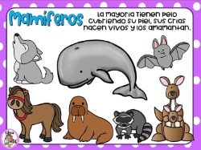

Los animales mamÃferos son una clase de animales vertebrados que se caracterizan por la presencia de glándulas mamarias, que producen leche para alimentar a sus crÃas. También tienen pelo o vello, y la mayorÃa de ellos tienen tres huesos en el oÃdo medio. Los mamÃferos son una de las clases más diversas de animales, con más de 5.000 especies que van desde los pequeños murciélagos hasta los grandes cetáceos. Los mamÃferos se encuentran en una amplia variedad de hábitats, desde los desiertos hasta los océanos.
Una de las caracterÃsticas más importantes de los mamÃferos es su capacidad para regular su propia temperatura corporal, lo que les permite vivir en una amplia variedad de entornos. Los mamÃferos también tienen un sistema nervioso complejo y un cerebro desarrollado, lo que les permite aprender y adaptarse a su entorno. Además, los mamÃferos tienen una variedad de comportamientos sociales, desde la vida solitaria hasta la formación de complejas sociedades. Todo esto hace que los mamÃferos sean una de las clases más fascinantes y diversificadas del reino animal.
